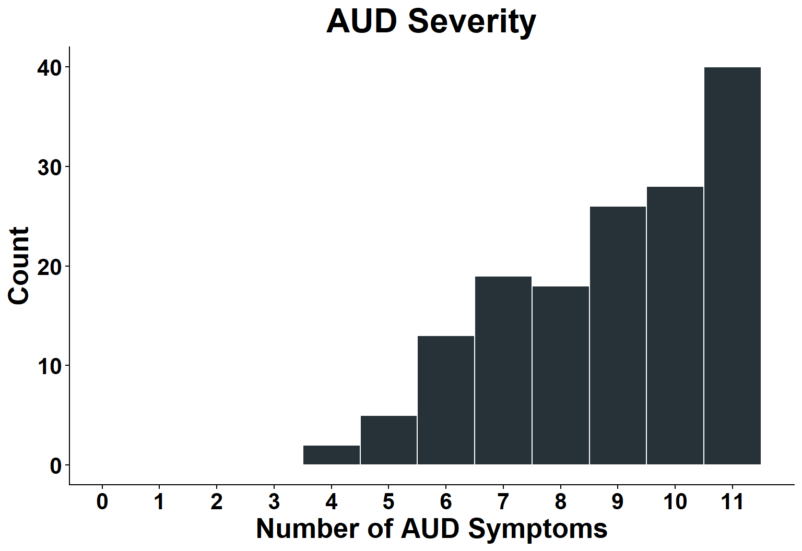

Toward Precision Continuing Care: Predicting Lapse Risk in Substance Use Disorders Using Machine Learning
2026-04-09
Substance Use Disorders
- Chronic condition
- Initial treatments are effective
- 1 in 10 individuals receive treatment
- Episodic approach to care
- Treatment Disparities exist for certain identities
- We don’t treat substance use disorders as chronic conditions

Relapse Prevention
- Recovery is a non-linear process
- Lapses serve as early warning signs of relapse
- Risk factors fluctuate and differ across individuals and within individuals over time
- Self-monitoring of risk is difficult

Recovery Monitoring and Support System
- Personalized adaptive recommendations
- Prompt individuals to engage with support at times of high risk

Recovery Monitoring and Support System
- Personalized adaptive recommendations
- Prompt individuals to engage with support at times of high risk
- Scalable to address unmet need
EMA
- Direct and frequent insight into subjective feelings and experiences
- Constructs easily map onto well-studied risk factors for lapse
- Appears to be well-tolerated

Geolocation
- Passively sensed
- May provide insight into information difficult to measure with self-report
- Locations can be contextualized
- Adds additional features for personalizing support recommendations

EMA Completion

- 3.1 of 4 surveys completed daily (78.4% compliance)
- 95% compliance for completing at least one survey daily
Performance

Future Directions
- Optimize the delivery of risk-relevant feedback